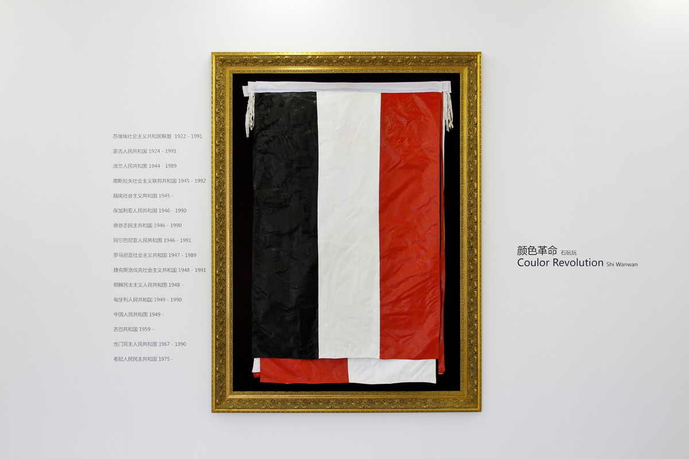
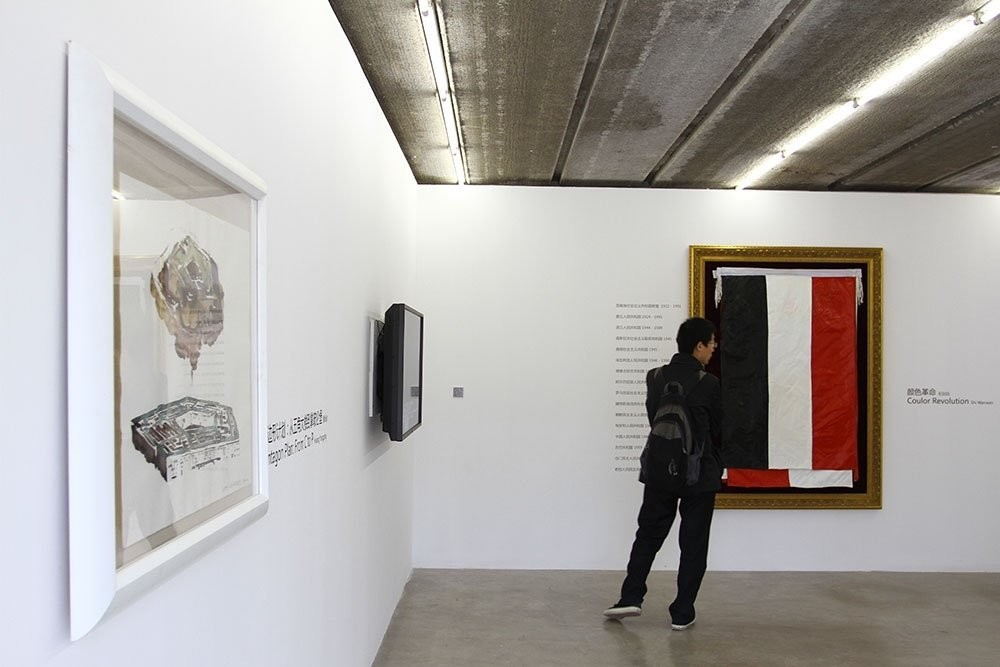
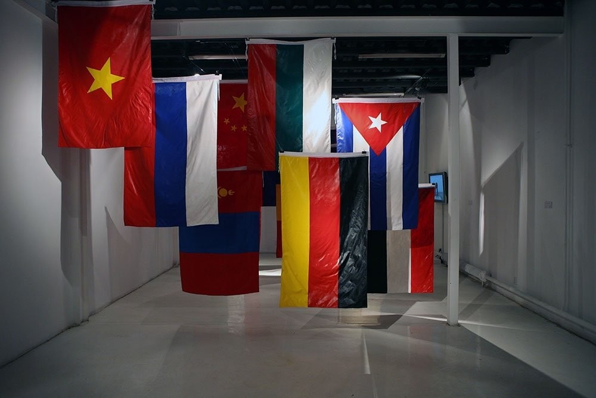
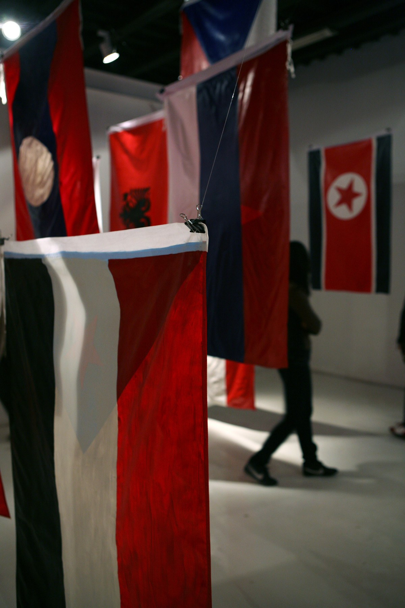

颜色革命 | COLOR REVOLUTION

装置，综合媒介，丙烯着色与丝质国旗 ，国旗尺寸为150x96cm ，木质外框 ，2009
Installation, Mixed media, Acrylic on silk flag, Wooden frame, Flag 150x96cm, 2009
将16个曾经是社会主义国家的国旗上画这些国家现在的国旗。
The patterns of 16 countries’ current national flags were painted on those flags used by them when they were still socialist countries.

泰康空间，北京
Taikang Space, Beijing

当代唐人艺术中心，北京
Tang Contemporary Art, Beijing

当代唐人艺术中心，北京
Tang Contemporary Art, Beijing